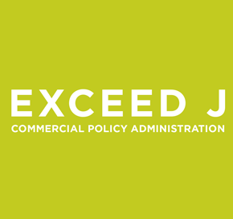
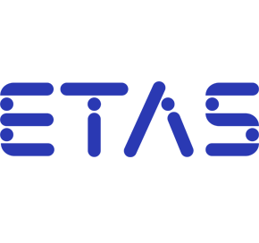
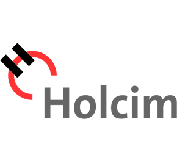
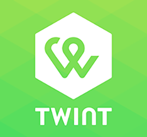

Hello!
I am Senior Java Engineer with 10
years experiences. I also have 1.5 years worked in the US.
Some big projects that I was working
on & many more:

CSC’s Exceed® J Commercial Policy Administration gives high-volume
property and casualty insurers one integrated solution for complete
commercial policy administration. The system is built to automate
your entire processing environment, including product configuration,
new business rate/quote entry, underwriting, endorsements, renewal
processing and online customer service...
more

The ASCET product family enables model-based development of
application software and automatic code generation from these
models. ASCET has been especially developed to meet specific
automotive requirements to embedded software with real-time,
efficiency and safety restrictions...
more

LOGON integrates data management and accounting systems (SAP R/3)
with automated weighing of trucks and silo wagons. It thereby
supports cement order processing from the initial placing of orders
over their allocation to haulers, the scheduling and loading of
trucks up to automated invoicing...
more

Twint makes it easy for you to pay with your mobile. The bulging
wallet is a thing of the past: this app from the PostFinance
subsidiary Twint, enables you to pay without cash quickly, easily
and free of charge. You can save your employee discount cards and
loyalty cards in the payment app...
more